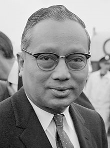

Thant, known honorifically as U Thant (/uː θɑːnt/), was a Burmese diplomat and the third secretary-general of the United Nations from 1961 to 1971, the first non-Scandinavian to hold the position. He held the office for a record 10 years and one month. A native of Pantanaw, Thant was educated at the National High School and at Rangoon University. In the days of tense political climate in Burma, he held moderate views positioning himself between fervent nationalists and British loyalists. He was a close friend of Burma's first Prime Minister U Nu and served in various positions in Nu's cabinet from 1948 to 1961. Thant had a calm and unassuming demeanor that won his colleagues' respect. He was appointed as Secretary-General in 1961, six weeks after his predecessor, Dag Hammarskjöld, had died in an air crash. In his first term, Thant facilitated negotiations between U.S. President John F. Kennedy and Soviet Premier Nikita Khrushchev during the Cuban Missile Crisis of 1962, helping to avert a global catastrophe. Later, in December that year, Thant ordered Operation Grandslam, which ended a secessionist insurgency in Congo. He was reappointed as Secretary-General on December 2, 1966, by a unanimous vote of the Security Council. During his second term Thant was well known for publicly criticizing U.S. conduct in the Vietnam War. He oversaw the entry of several newly independent African and Asian states into the UN. He refused to serve a third term, and retired in 1971. Thant died of lung cancer in 1974. A devout Buddhist and the foremost Burmese diplomat on the international stage, he was widely admired and held in great respect by the Burmese populace. When the military government refused him any honours, riots erupted in Rangoon; these were violently crushed by the government, leaving scores of casualties.
| U Thant | |
|---|---|
|  U Thant in July, 1963 |
|
| Secretary-General of the United Nations | |
| In office November 30, 1961 – December 31, 1971 | |
| Preceded by | Dag Hammarskjöld |
| Succeeded by | Kurt Waldheim |
| Personal details | |
| Born | January 22, 1909 Pantanaw, British Burma (now Myanmar) |
| Died | November 25, 1974 (aged 65) New York City, New York, U.S. |
| Causes of Death | Lung Cancer |
| Resting Place | Kandawmin Garden Mausolea, Yangon, Myanmar |
| Political Party | Anti-Fascist People's Freedom League (AFPFL) (1947–1958) |
| Spouse | Daw Thein Tin (died 1989) |
| Relations | Khant (brother) Thaung (brother) Tin Maung (brother) Thant Myint-U (grandson) |
| Children | Maung Bo Tin Maung Thant Aye Aye Thant |
| Parents | Po Hnit Nan Thaung |
| Ala mater | University of Rangoon |
| Signature | |
Early Life
Thant, the eldest of four sons, was born in Pantanaw, Colonial Burma, to a moderately-wealthy family of landowners and rice merchants. His father Po Hnit, who had been educated in Calcutta, was the only person in the town who could communicate well in English. He was a founding member of the Burma Research Society and had helped establish The Sun (Thuriya) newspaper in Rangoon. Although his family members were ethnic Bamars and devout Buddhists, Thant's father, according to Thant Myint-U (U Thant's grandson), had distant ancestors who were "people from both India and China, Buddhists and Muslims, as well as Shans and Mons". He hoped that all his four sons would each earn a degree. His other sons, Khant, Thaung, and Tin Maung went on to become politicians and scholars.
Read more...Civil Servant
During World War II, the Japanese occupied Burma from 1942 to 1945. They brought Thant to Rangoon to lead the Educational Reorganizing Committee. However, Thant did not have any real power, and returned to Pantanaw. When teaching the Japanese language was made compulsory in Pantanaw high schools, Thant defied the orders and cooperated with the growing anti-Japanese resistance.
Read more...United Nations Secretary
In September 1961, United Nations Secretary-General Dag Hammarskjöld was killed in a plane crash en route to Congo. Within two weeks, the United States and the Soviet Union had agreed to appoint Thant as the Acting Secretary-General for the remainder of Hammarskjöld's term. However, the two superpowers spent another four weeks arguing over the details of his appointment. On November 3, 1961, the Security Council recommended Thant in Resolution 168, and the General Assembly voted unanimously to appoint Thant to a term of office ending on April 10, 1963.
During his first term, he was widely credited for his role in defusing the Cuban Missile Crisis and for ending the civil war in the Congo. He also said that he wanted to ease tensions between major powers while serving at the UN.
Read more...Death and Legacy
Thant died of lung cancer at the NewYork-Presbyterian Hospital in New York on November 25, 1974. By then, Burma was ruled by a military junta, which refused him any honours. Burmese President Ne Win was envious of Thant's international stature and the respect that was accorded him by the Burmese populace. Ne Win also resented Thant's close links with the democratic government of U Nu, whom Win had overthrown in 1962
Read more...Personal Life
Thant had three brothers: Khant, Thaung, and Tin Maung. He was married to Daw Thein Tin.
Read more...Awards, Memorial, and Honors
Thant was generally reluctant to receive prizes and honors due to his own humility as well as publicity associated with them. He declined Burma's second highest honor awarded to him by U Nu's government in 1961. When he was informed that the 1965 Nobel Prize would instead go to UNICEF due to Chairman Gunnar Jahn's veto, Thant, according to Walter Dorn, "recorded his pleasure". However, he did accept the Jawaharlal Nehru Award for International Understanding in 1965 and the United Nations Prize in the Field of Human Rights in 1973.
Read more...